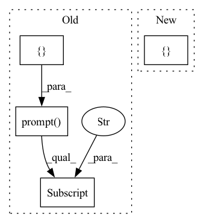

Pattern ID :17336

Before Change
def launch_training_menu():
training_menu = [
inq.List("menu",
message=f"{CLIColors.OKGREEN}{CLIColors.BOLD}Training Menu{CLIColors.ENDC}",
choices=["Train All", "Train CenterDetect", "Train KeypointDetect",
"Train HybridNet", "<< back"])
]
menu = inq.prompt(training_menu)["menu"]
if menu == "<< back":
return
elif menu == "Train All":
train_all()
After Change
def launch_training_menu():
menu_items = ["Train All", "Train CenterDetect", "Train KeypointDetect",
"Train HybridNet", "<< back"]
menu = inq.list_input(f"{CLIColors.OKGREEN}{CLIColors.BOLD}Training "
f"Menu{CLIColors.ENDC}", choices = menu_items)
if menu == "<< back":
In pattern: SUPERPATTERN
Frequency: 3
Non-data size: 4
Instances
Fragment ID: 57529692
Project Name: jarvis-mocap/jarvis-hybridnet
Commit Name: acbebe0e436c68a4e75e960ac0570c3e06fa1abf
Time: 2022-03-17
Author: jarvismocap@gmail.com
File Name: jarvis/ui/interactive_cli/train_cli.py
M Class Name: AnonimousClass
N Class Name: AnonimousClass
M Method Name: launch_training_menu(0)
N Method Name: launch_training_menu(0)
M Parent Class:
N Parent Class:
M File Name: jarvis/ui/interactive_cli/train_cli.py
N File Name: jarvis/ui/interactive_cli/train_cli.py
M Start Line: 32
M End Line: 38
N Start Line: 33
N End Line: 36
'>
Before Change
def launch_analyze_menu():
cls()
training_menu = [
inq.List("menu",
message=f"{CLIColors.OKGREEN}{CLIColors.BOLD}Training Menu{CLIColors.ENDC}",
choices=["Analyze Validation Data", "Plot Error Histogram", "Plot Error per Joint", "Plot Joint Length Distribution", "<< back"])
]
menu = inq.prompt(training_menu)["menu"]
if menu == "<< back":
return
elif menu == "Analyze Validation Data":
analyze_validation_data()
After Change
def launch_analyze_menu():
cls()
menu_items = ["Analyze Validation Data", "Plot Error Histogram",
"Plot Error per Joint", "Plot Joint Length Distribution",
"<< back"]
menu = inq.list_input(f"{CLIColors.OKGREEN}{CLIColors.BOLD}Training "
f"Menu{CLIColors.ENDC}", choices = menu_items)
'>
Fragment ID: 57529688
Project Name: jarvis-mocap/jarvis-hybridnet
Commit Name: acbebe0e436c68a4e75e960ac0570c3e06fa1abf
Time: 2022-03-17
Author: jarvismocap@gmail.com
File Name: jarvis/ui/interactive_cli/analyze_cli.py
M Class Name: AnonimousClass
N Class Name: AnonimousClass
M Method Name: launch_analyze_menu(0)
N Method Name: launch_analyze_menu(0)
M Parent Class:
N Parent Class:
M File Name: jarvis/ui/interactive_cli/analyze_cli.py
N File Name: jarvis/ui/interactive_cli/analyze_cli.py
M Start Line: 22
M End Line: 27
N Start Line: 20
N End Line: 24
'>
Before Change
}
cutoff = -1
if inq.prompt(use_cutoff_q)["use_cutoff"] == "Yes":
cutoff_q = [
inq.Text("cutoff",
message="Cutoff Value",
validate = lambda _, x: (x.isdigit() and int(x) > 0),
default = "20")
]
cutoff = int(inq.prompt(cutoff_q)["cutoff"])
analyze_interface.plot_error_histogram(path, cutoff)
launch_analyze_menu()
After Change
cls()
path = get_analysis_path()
add_more_data = True
additional_data = {}
while add_more_data:
add_more = inq.list_input( "Add another ".csv" file containing "
"predictions?", choices =["Yes", "No"], default = "No")
if add_more == "Yes":
'>
Fragment ID: 57529691
Project Name: jarvis-mocap/jarvis-hybridnet
Commit Name: acbebe0e436c68a4e75e960ac0570c3e06fa1abf
Time: 2022-03-17
Author: jarvismocap@gmail.com
File Name: jarvis/ui/interactive_cli/analyze_cli.py
M Class Name: AnonimousClass
N Class Name: AnonimousClass
M Method Name: plot_error_histogram(0)
N Method Name: plot_error_histogram(0)
M Parent Class:
N Parent Class:
M File Name: jarvis/ui/interactive_cli/analyze_cli.py
N File Name: jarvis/ui/interactive_cli/analyze_cli.py
M Start Line: 110
M End Line: 123
N Start Line: 107
N End Line: 126